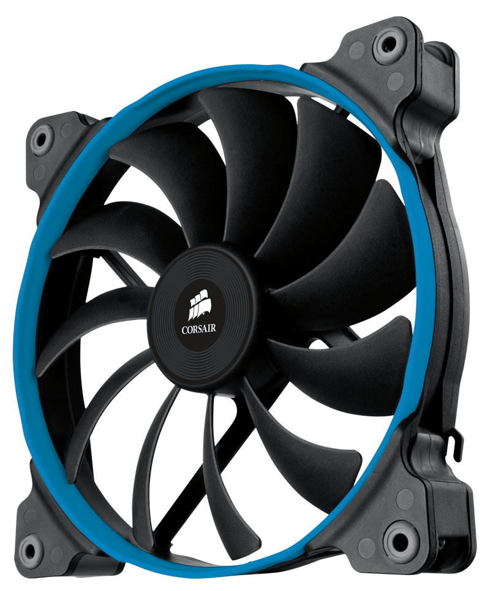

A computer fan is any fan inside, or attached to, a computer case used for active cooling. Fans are used to draw cooler air into the case from the outside, expel warm air from inside and move air across a heat sink to cool a particular component. Both axial and sometimes centrifugal (blower/squirrel-cage) fans are used in computers. Computer fans commonly come in standard sizes, and are powered and controlled using 3-pin or 4-pin fan connectors.
While in earlier personal computers it was possible to cool most components using natural convection (passive cooling), many modern components require more effective active cooling. To cool these components, fans are used to move heated air away from the components and draw cooler air over them. Fans attached to components are usually used in combination with a heat sink to increase the area of heated surface in contact with the air, thereby improving the efficiency of cooling. Fan control is not always an automatic process. A computer's BIOS (basic input/output system) can control the speed of the built-in fan system for the computer. A user can even supplement this function with additional cooling components or connect a manual fan controller with knobs that set fans to different speeds.
In the IBM PC compatible market, the computer's power supply unit (PSU) almost always uses an exhaust fan to expel warm air from the PSU. Active cooling on CPUs started to appear on the Intel 80486, and by 1997 was standard on all desktop processors. Chassis or case fans, usually one exhaust fan to expel heated air from the rear and optionally an intake fan to draw cooler air in through the front, became common with the arrival of the Pentium 4 in late 2000.